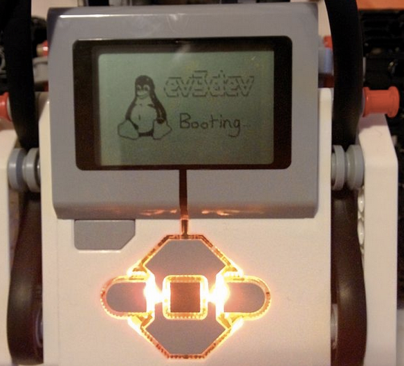

Lego 和 Ruby
Created by quake wang
Lego系列
- 城市系列
- 街景系列
- 创意系列
- 科技系列
- ...
- http://jingyan.smzdm.com/p/159
科技系列 Lego Technic
科技系列运用了齿轮组、马达和遥控等机械部件，使乐高能够真正的动起来，因此可玩性更高。
科技系列之机器人 EV3
最新一代的乐高机器人，支持多种传感器和马达，通过编程控制输入输出，程序员的好玩具。

可视化的编程界面
ev3dev
ev3dev是一个可运行在EV3控制器上的Linux发行版, 是一个完整的Debian发行版本
声音
beep -f 200 -l 500 # 220 Hz for 500 ms
beep -f 262 -l 180 -d 20 -r 2 \
-n -f 392 -l 180 -d 20 -r 2 \
-n -f 440 -l 180 -d 20 -r 2 \
-n -f 392 -l 380 -d 20 \
-n -f 349 -l 180 -d 20 -r 2 \
-n -f 330 -l 180 -d 20 -r 2 \
-n -f 294 -l 180 -d 20 -r 2 \
-n -f 262 -l 400 # twinkle twinkle little star
Text To Speech
espeak "Hello! I am EV3，I like to talk because I am a robot." \
--stdout | aplay
超声波传感器
cat /sys/class/lego-sensor/sensor3/port_name
watch -n 1 cat /sys/class/lego-sensor/sensor3/value0
平衡传感器
cat /sys/class/lego-sensor/sensor1/port_name
echo GYRO-RATE > /sys/class/lego-sensor/sensor1/mode
watch -n 1 cat /sys/class/lego-sensor/sensor1/value0
马达 - 运行1秒钟
cd /sys/class/tacho-motor/motor0/
cat port_name
echo time > run_mode
echo 50 > duty_cycle_sp
echo 1000 > time_sp
echo 1 > run
马达 - 更精确的控制
cd /sys/class/tacho-motor/motor1/
cat port_name
watch -n 1 cat position
echo position > run_mode
echo on > regulation_mode
echo 500 > pulses_per_second_sp
echo 0 > position_sp
echo 1 > run
Bash Script
for i in {1..6}
do
if [ $(($i%2)) == 0 ]; then
echo 50 > position_sp
else
echo -50 > position_sp
fi
echo 1 > run
sleep 2
done
Linux - 一切皆文件
- ev3dev将传感器和马达的操作映射到了文件系统, 变成了统一的文件操作.
- 可以用任何语言通过读写文件来控制ev3
- 包括我最喜欢的Ruby
ev3dev ruby gem
https://github.com/quake/ev3dev_ruby
require 'ev3dev'
s = Ev3dev::Sensor.new(4)
10.times do
puts s.value0
sleep 0.5
end
Ruby的method missing
def method_missing(name, *args, &block)
raise "no device connected" if @device_path.nil?
param = File.join @device_path, name.to_s
raise "no such attribute: #{param}" unless File.exist? param
if args.first.nil?
IO.read(param).strip
else
IO.write param, args.first.to_s
end
end
Bash Script对应的ruby版本
require 'ev3dev'
m = Ev3dev::Motor.new('C')
m.run_mode(:position).regulation_mode(:on).pulses_per_second_sp(500)
6.times do |i|
m.position_sp(i % 2 == 0 ? 50 : -50)
m.go
sleep 2
end